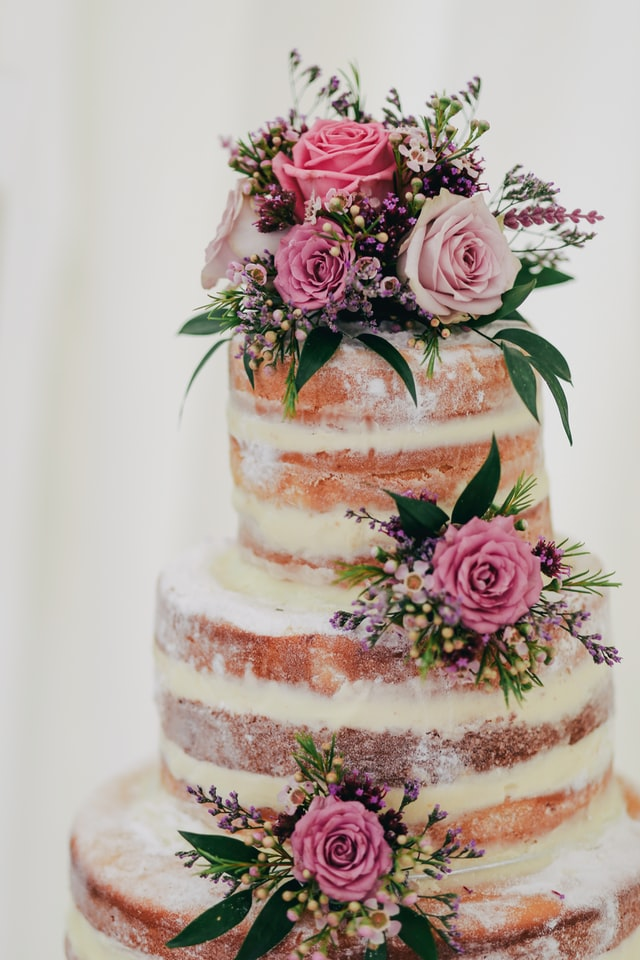
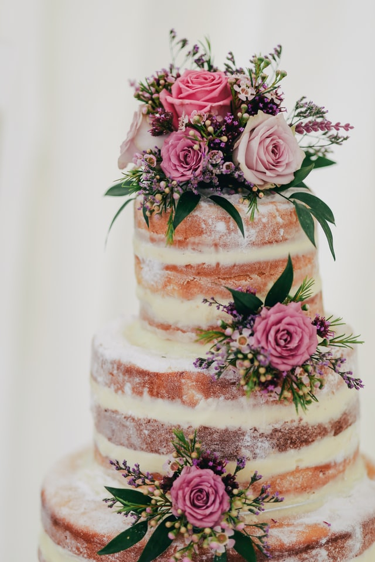
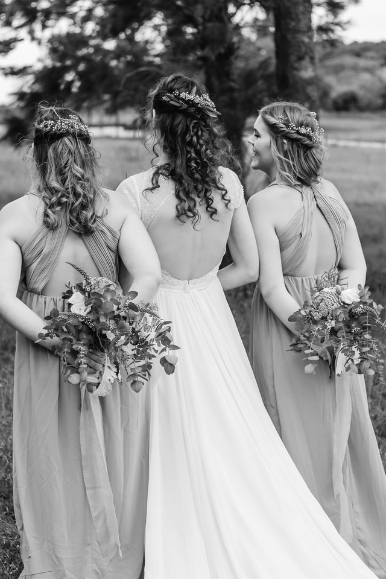
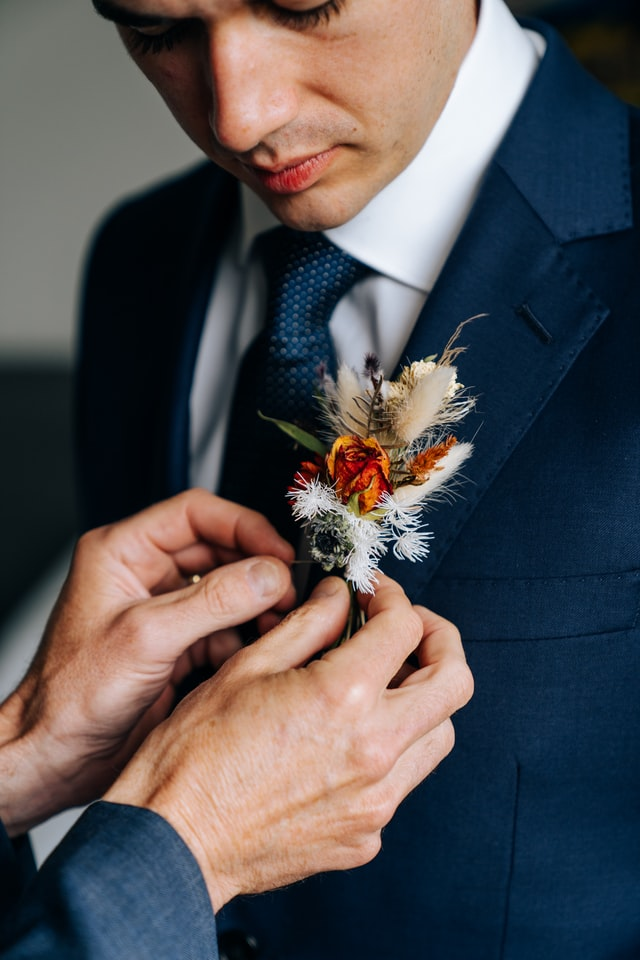
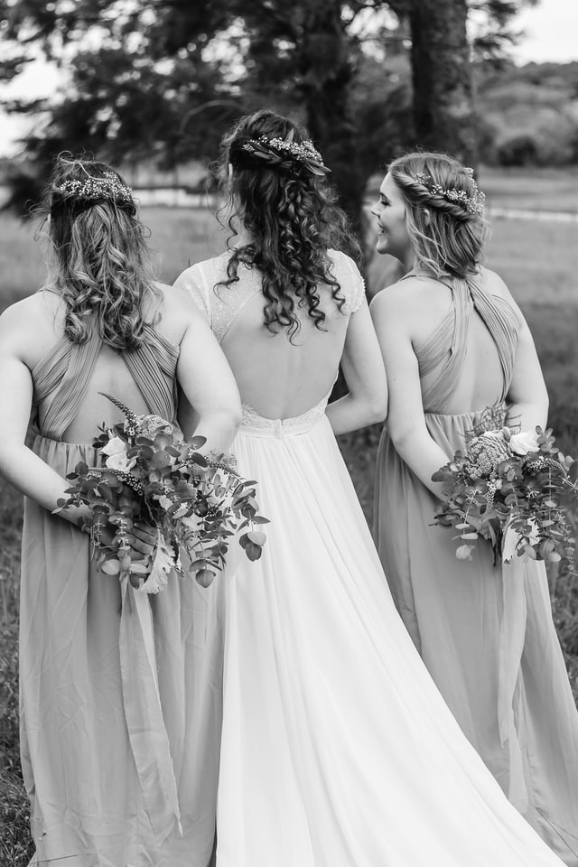
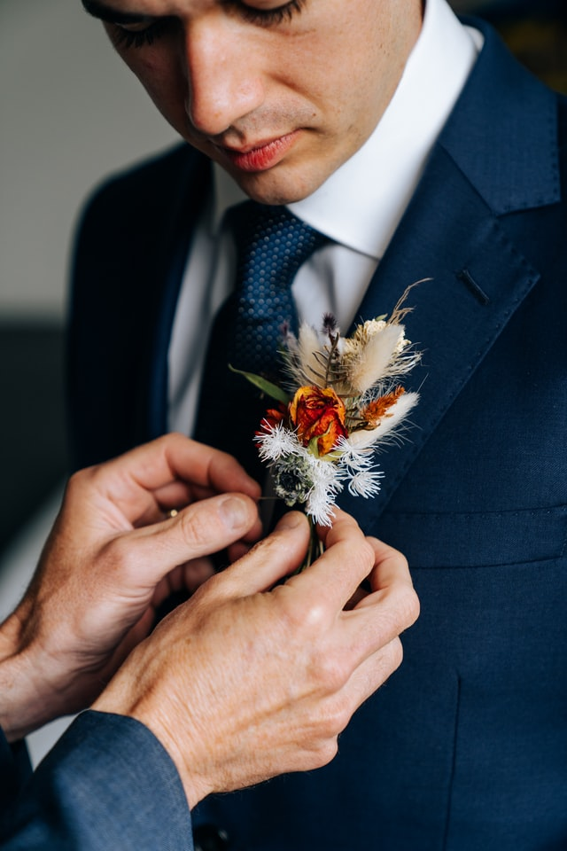

Style of Life
Flower is the essence for our life. Your life gets brighter, provides cozy and gorgeous moment.It is a magical creature that gives your life moisture and leeway.
Articles
Flower crowns

A flower whose season changes depending on the season. How about using them to make a gorgeous flower crown? A single corolla is more luxurious than any accessory and will bring out your beauty. What was the reason for the corolla originally? From what country? Want to know a little more about the kana crown that women around the world love?
Flower cakes
Recently, there are increasing opportunities to use fresh flowers for cake deoration. For someone special on a special day, the party will be many times more exciting if you use the beauty-preserving results for decoration.
 

For example, isn't cake a must for weddings? By using the results that match the color and type of flowers in the bride's bouquet, you can make many times more gorgeous decorations by simply preparing a simple foundation. How should I handle the fresh flowers that are actually used in the cake?
Whould you like to subscribe our monthly magazine?
Register HereFlower in Wedding
Everyone imagines a flower as a wedding, right? White, pink, yellow, ... The flowers on the bouquet and the table at the ceremonial hall make the bride's dress even more gorgeous. Flowers are attached not only to women but also to the groom's chest as a brooch. Of course, not only flowers but also refreshing bouquets and decorations using only green are popular these days. Want to see more of the trendy wedding styles?
 



Keep beautiful moment in your mind
Flower accessories
Just adding a small white flower to the braid will give you such a beautiful impression.
Baby's breath
Innocent Love
Gratitude
Hapiness

How about the colorful flowers tied in the back?
Viola
Thinking about me
Thoughtful
Sincere
If you're bold, you can arrange something like her!
Yellow Rose
Beauty
Friendship
Dedication